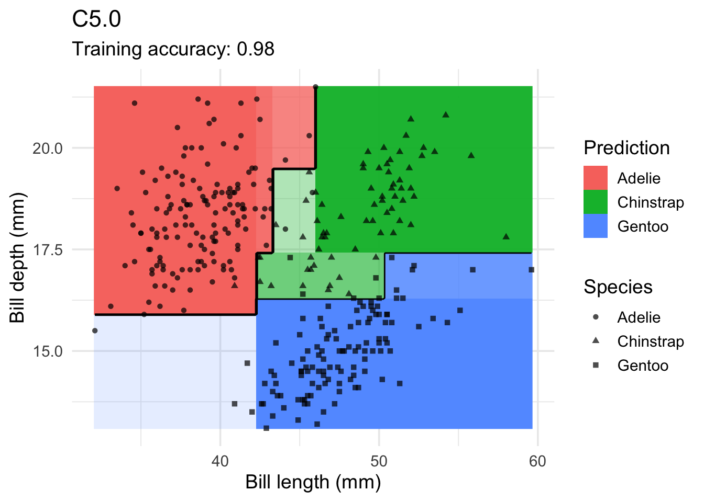

# Sets the number of significant figures to twooptions(digits =3)if(!require(pacman))install.packages("pacman")
Loading required package: pacman
pacman::p_load( C50, # C5.0 Decision Trees and Rule-Based Models caret, # Classification and Regression Training e1071, # Misc Functions of the Department of Statistics (e1071), TU Wien keras, # R Interface to 'Keras' kernlab, # Kernel-Based Machine Learning Lab lattice, # Trellis Graphics for R MASS, # Support Functions and Datasets for Venables and Ripley's MASS mlbench, # Machine Learning Benchmark Problems nnet, # Feedforward Neural Networks and Multinomial Log-Linear Models palmerpenguins, # Palmer Archipelago (Antarctica) Penguin Data party, # A Laboratory for Recursive Partytioning partykit, # A Toolkit for Recursive Partytioning randomForest, # Breiman and Cutler's Random Forests for Classification and Regression rpart, # Recursive partitioning models RWeka, # R/Weka Interface scales, # Scale Functions for Visualization tidymodels, # Tidy machine learning framework tidyverse, # Tidy data wrangling and visualization xgboost # Extreme Gradient Boosting)
Training and Test Data
Using the spam email dataset from tidyurl- The dataset classifies 4601 e-mails as spam or non-spam, with additional variables indicating the frequency of certain words and characters in the e-mail.
The features in the table are as
crl.tot - Total length of uninterrupted sequences of capitals
dollar - Occurrences of the dollar sign, as percent of total number of characters
bang - Occurrences of ‘!’, as percent of total number of characters
money - Occurrences of ‘money’, as percent of total number of characters
n000 - Occurrences of the string ‘000’, as percent of total number of words
make - Occurrences of ‘make’, as a percent of total number of words
yesno - Outcome variable, a factor with levels ‘n’ not spam, ‘y’ spam
# Loading the datasetspam <-read.csv("/Users/shashwatsingh/Documents/GitHub/hw-03-shashwatsinghds/data/spam.csv") spam<-as.data.frame(spam)spam |>glimpse()
Test data is not used in the model building process and needs to be set aside purely for testing the model after it is completely built. Using 80-20 method, i.e., 80 percent for training and 20 percent for testing.
set.seed(123) # for reproducibilityinTrain <-createDataPartition(y = spam$yesno, p = .8)[[1]]spam_train <- dplyr::slice(spam, inTrain)spam_test <- dplyr::slice(spam, -inTrain)
Fitting Different Classification Models to the Training Data
Create a fixed sampling scheme (10-folds) so we can compare the fitted models later.
train_index <-createFolds(spam_train$yesno, k =10)
The fixed folds are used in train() with the argument trControl = trainControl(method = "cv", indexOut = train_index)). If you don't need fixed folds, then remove indexOut = train_index in the code below.
For help with building models in caret see: ? train
Note: Be careful if you have many NA values in your data. train() and cross-validation many fail in some cases. If that is the case then you can remove features (columns) which have many NAs, omit NAs using na.omit() or use imputation to replace them with reasonable values (e.g., by the feature mean or via kNN). Highly imbalanced datasets are also problematic since there is a chance that a fold does not contain examples of each class leading to a hard to understand error message.
Conditional Inference Tree
3682 samples
6 predictor
2 classes: 'n', 'y'
No pre-processing
Resampling: Cross-Validated (10 fold)
Summary of sample sizes: 3313, 3314, 3314, 3314, 3314, 3314, ...
Resampling results across tuning parameters:
mincriterion Accuracy Kappa
0.010 0.888 0.758
0.255 0.882 0.744
0.500 0.879 0.737
0.745 0.878 0.734
0.990 0.871 0.722
Accuracy was used to select the optimal model using the largest value.
The final value used for the model was mincriterion = 0.01.
Notice that the highest Accuracy has the lowest mincriterion(here).
C4.5-like Trees
3682 samples
6 predictor
2 classes: 'n', 'y'
No pre-processing
Resampling: Cross-Validated (10 fold)
Summary of sample sizes: 3314, 3314, 3314, 3314, 3314, 3313, ...
Resampling results across tuning parameters:
C M Accuracy Kappa
0.010 1 0.883 0.750
0.010 2 0.883 0.750
0.010 3 0.882 0.746
0.010 4 0.881 0.744
0.010 5 0.881 0.744
0.133 1 0.889 0.760
0.133 2 0.888 0.759
0.133 3 0.887 0.757
0.133 4 0.885 0.752
0.133 5 0.884 0.750
0.255 1 0.890 0.762
0.255 2 0.889 0.761
0.255 3 0.888 0.758
0.255 4 0.885 0.752
0.255 5 0.885 0.751
0.378 1 0.891 0.765
0.378 2 0.891 0.764
0.378 3 0.889 0.760
0.378 4 0.885 0.751
0.378 5 0.886 0.754
0.500 1 0.891 0.765
0.500 2 0.891 0.764
0.500 3 0.889 0.761
0.500 4 0.887 0.755
0.500 5 0.887 0.756
Accuracy was used to select the optimal model using the largest value.
The final values used for the model were C = 0.378 and M = 1.
# This was failing to render due to the complexity of tree
C45Fit$finalModel
J48 pruned tree
------------------
dollar <= 0.055
| money <= 0
| | bang <= 0.169
| | | n000 <= 0.11
| | | | bang <= 0.028: n (1725.0/137.0)
| | | | bang > 0.028
| | | | | dollar <= 0.005: n (256.0/49.0)
| | | | | dollar > 0.005
| | | | | | n000 <= 0.04
| | | | | | | crl.tot <= 819
| | | | | | | | dollar <= 0.039: n (6.0)
| | | | | | | | dollar > 0.039
| | | | | | | | | make <= 0.11: n (13.0/5.0)
| | | | | | | | | make > 0.11: y (4.0)
| | | | | | | crl.tot > 819: y (6.0/1.0)
| | | | | | n000 > 0.04: n (3.0)
| | | n000 > 0.11
| | | | crl.tot <= 205
| | | | | make <= 0.45: y (13.0/2.0)
| | | | | make > 0.45: n (2.0)
| | | | crl.tot > 205
| | | | | crl.tot <= 1738: n (12.0/1.0)
| | | | | crl.tot > 1738: y (2.0)
| | bang > 0.169
| | | crl.tot <= 68
| | | | bang <= 0.757: n (202.0/43.0)
| | | | bang > 0.757
| | | | | crl.tot <= 22
| | | | | | bang <= 3.907: n (32.0/5.0)
| | | | | | bang > 3.907
| | | | | | | bang <= 7.707: y (5.0)
| | | | | | | bang > 7.707: n (2.0)
| | | | | crl.tot > 22
| | | | | | bang <= 4.347: y (36.0/6.0)
| | | | | | bang > 4.347: n (4.0)
| | | crl.tot > 68
| | | | bang <= 0.563
| | | | | crl.tot <= 179
| | | | | | n000 <= 0.15: n (91.0/40.0)
| | | | | | n000 > 0.15: y (5.0/1.0)
| | | | | crl.tot > 179: y (71.0/10.0)
| | | | bang > 0.563: y (124.0/3.0)
| money > 0
| | bang <= 0.081
| | | n000 <= 0.3
| | | | dollar <= 0.024
| | | | | dollar <= 0.019
| | | | | | money <= 1.32
| | | | | | | crl.tot <= 5902: n (17.0/1.0)
| | | | | | | crl.tot > 5902: y (2.0)
| | | | | | money > 1.32
| | | | | | | crl.tot <= 54: n (7.0/2.0)
| | | | | | | crl.tot > 54: y (6.0)
| | | | | dollar > 0.019: y (2.0)
| | | | dollar > 0.024: n (6.0)
| | | n000 > 0.3: y (4.0)
| | bang > 0.081
| | | crl.tot <= 87
| | | | crl.tot <= 74
| | | | | money <= 0.63
| | | | | | make <= 0.11: n (2.0)
| | | | | | make > 0.11: y (1.0)
| | | | | money > 0.63: y (10.0)
| | | | crl.tot > 74: n (4.0)
| | | crl.tot > 87: y (95.0/1.0)
dollar > 0.055
| bang <= 0.143
| | money <= 0.02
| | | n000 <= 0.49
| | | | dollar <= 0.168
| | | | | bang <= 0.049: n (53.0/8.0)
| | | | | bang > 0.049
| | | | | | bang <= 0.07: y (10.0)
| | | | | | bang > 0.07
| | | | | | | crl.tot <= 126: y (3.0)
| | | | | | | crl.tot > 126: n (12.0/2.0)
| | | | dollar > 0.168
| | | | | dollar <= 0.188: y (12.0)
| | | | | dollar > 0.188
| | | | | | n000 <= 0.1: n (45.0/20.0)
| | | | | | n000 > 0.1
| | | | | | | dollar <= 0.291: n (1.0)
| | | | | | | dollar > 0.291: y (3.0)
| | | n000 > 0.49: y (33.0)
| | money > 0.02
| | | crl.tot <= 53
| | | | crl.tot <= 50: n (3.0)
| | | | crl.tot > 50: y (7.0)
| | | crl.tot > 53: y (113.0/2.0)
| bang > 0.143
| | crl.tot <= 418
| | | bang <= 0.376
| | | | bang <= 0.26: y (75.0/3.0)
| | | | bang > 0.26
| | | | | make <= 0.27
| | | | | | make <= 0.08
| | | | | | | dollar <= 0.165
| | | | | | | | dollar <= 0.104
| | | | | | | | | money <= 0.19
| | | | | | | | | | crl.tot <= 62: n (2.0)
| | | | | | | | | | crl.tot > 62: y (7.0)
| | | | | | | | | money > 0.19: n (1.0)
| | | | | | | | dollar > 0.104: y (15.0)
| | | | | | | dollar > 0.165
| | | | | | | | dollar <= 0.466
| | | | | | | | | crl.tot <= 102: n (7.0)
| | | | | | | | | crl.tot > 102
| | | | | | | | | | crl.tot <= 226: y (4.0)
| | | | | | | | | | crl.tot > 226: n (2.0)
| | | | | | | | dollar > 0.466: y (3.0)
| | | | | | make > 0.08
| | | | | | | dollar <= 0.46: n (2.0)
| | | | | | | dollar > 0.46: y (1.0)
| | | | | make > 0.27: y (10.0)
| | | bang > 0.376: y (206.0/3.0)
| | crl.tot > 418: y (282.0)
Number of Leaves : 59
Size of the tree : 117
K-Nearest Neighbors
Note: kNN uses Euclidean distance, so data should be standardized (scaled) first. Here legs are measured between 0 and 6 while all other variables are between 0 and 1. Scaling can be directly performed as preprocessing in train using the parameter preProcess = "scale".
k-Nearest Neighbors
3682 samples
6 predictor
2 classes: 'n', 'y'
Pre-processing: scaled (6)
Resampling: Cross-Validated (10 fold)
Summary of sample sizes: 3314, 3314, 3314, 3314, 3314, 3314, ...
Resampling results across tuning parameters:
k Accuracy Kappa
1 0.963 0.921
2 0.913 0.816
3 0.906 0.800
4 0.890 0.765
5 0.889 0.763
6 0.886 0.756
7 0.880 0.744
8 0.876 0.733
9 0.878 0.738
10 0.875 0.730
Accuracy was used to select the optimal model using the largest value.
The final value used for the model was k = 1.
knnFit$finalModel
1-nearest neighbor model
Training set outcome distribution:
n y
2231 1451
PART (Rule-based classifier)
library(doParallel)
Loading required package: foreach
Attaching package: 'foreach'
The following objects are masked from 'package:purrr':
accumulate, when
Rule-Based Classifier
3682 samples
6 predictor
2 classes: 'n', 'y'
No pre-processing
Resampling: Cross-Validated (10 fold)
Summary of sample sizes: 3314, 3314, 3314, 3314, 3313, 3314, ...
Resampling results across tuning parameters:
threshold pruned Accuracy Kappa
0.010 yes 0.883 0.748
0.010 no 0.877 0.734
0.133 yes 0.886 0.756
0.133 no 0.877 0.734
0.255 yes 0.884 0.750
0.255 no 0.877 0.734
0.378 yes 0.883 0.749
0.378 no 0.877 0.734
0.500 yes 0.883 0.749
0.500 no 0.877 0.734
Accuracy was used to select the optimal model using the largest value.
The final values used for the model were threshold = 0.133 and pruned = yes.
rulesFit$finalModel
PART decision list
------------------
dollar > 0.055 AND
bang > 0.143 AND
crl.tot > 418: y (282.0)
dollar > 0.055 AND
bang > 0.049: y (438.0/36.0)
money > 0 AND
n000 <= 0.25 AND
money > 0.16 AND
crl.tot > 93: y (111.0/7.0)
n000 > 0.25 AND
bang > 0.003: y (82.0/2.0)
bang <= 0.171 AND
dollar <= 0.168 AND
crl.tot > 15 AND
n000 <= 0.16 AND
money <= 0.03 AND
bang <= 0.027: n (1313.0/136.0)
crl.tot <= 15 AND
bang <= 0.613: n (476.0/11.0)
bang > 0.486 AND
crl.tot > 64 AND
make <= 0.11: y (136.0/8.0)
money > 0.87 AND
money <= 1.47: y (19.0)
n000 > 0.27 AND
make <= 0.18 AND
n000 > 0.42: y (17.0)
bang <= 0.188 AND
dollar <= 0.005: n (311.0/64.0)
crl.tot <= 51 AND
bang <= 0.53 AND
dollar <= 0.279: n (105.0/18.0)
crl.tot <= 22 AND
bang <= 3.907: n (57.0/10.0)
n000 > 0.06 AND
crl.tot > 246 AND
dollar > 0.036: n (11.0)
money > 0 AND
n000 <= 0.24 AND
crl.tot <= 368: y (10.0/2.0)
: y (314.0/142.0)
Number of Rules : 15
Support Vector Machines with Linear Kernel
3682 samples
6 predictor
2 classes: 'n', 'y'
No pre-processing
Resampling: Cross-Validated (10 fold)
Summary of sample sizes: 3314, 3314, 3314, 3314, 3314, 3313, ...
Resampling results:
Accuracy Kappa
0.845 0.663
Tuning parameter 'C' was held constant at a value of 1
svmFit$finalModel
Support Vector Machine object of class "ksvm"
SV type: C-svc (classification)
parameter : cost C = 1
Linear (vanilla) kernel function.
Number of Support Vectors : 1516
Objective Function Value : -1509
Training error : 0.156437
Random Forest
3682 samples
6 predictor
2 classes: 'n', 'y'
No pre-processing
Resampling: Cross-Validated (10 fold)
Summary of sample sizes: 3313, 3314, 3314, 3314, 3313, 3314, ...
Resampling results across tuning parameters:
mtry Accuracy Kappa
2 0.922 0.832
3 0.943 0.878
4 0.958 0.910
5 0.962 0.919
6 0.964 0.923
Accuracy was used to select the optimal model using the largest value.
The final value used for the model was mtry = 6.
randomForestFit$finalModel
Call:
randomForest(x = x, y = y, mtry = param$mtry)
Type of random forest: classification
Number of trees: 500
No. of variables tried at each split: 6
OOB estimate of error rate: 12.5%
Confusion matrix:
n y class.error
n 2050 181 0.0811
y 279 1172 0.1923
eXtreme Gradient Boosting
3682 samples
6 predictor
2 classes: 'n', 'y'
No pre-processing
Resampling: Cross-Validated (10 fold)
Summary of sample sizes: 3314, 3313, 3314, 3314, 3314, 3314, ...
Resampling results:
Accuracy Kappa
0.869 0.716
Tuning parameter 'nrounds' was held constant at a value of 20
Tuning
held constant at a value of 1
Tuning parameter 'subsample' was held
constant at a value of 0.5
Perform inference about differences between models. For each metric, all pair-wise differences are computed and tested to assess if the difference is equal to zero. By default Bonferroni correction for multiple comparison is used. Differences are shown in the upper triangle and p-values are in the lower triangle.
All perform similarly well except ctree (differences in the first row are negative and the p-values in the first column are <.05 indicating that the null-hypothesis of a difference of 0 can be rejected).
Applying the Chosen Model to the Test Data
KNN and Random forest model do similarly well on the data. We choose here the random forest model.
pr <-predict(randomForestFit, spam_test)pr
[1] n n y y y n y y y y y y y y y n y y y y n y y y y n y y y y n y y n y y n
[38] y y y n y y y y y n y y y y y y y n y y y y y y y n y y n y y y y y y y n
[75] y y y y y n y y y y y y y y y y n n y y y n n y y y y y y n n y y y y n y
[112] y y n y n n y y y y n n y n n y y y y y y y y y y y n y y y y y y y y n y
[149] y y y y y y n y y y y y y y y y y y n n y y y y y y y y n y y y y n y y y
[186] y y y y y y y y y y y y y y y y y y y y y y y y y y y y y y n y y n y y y
[223] y y y y n y y y y y y y y n y n y n n y y y y y n y n y y y y y y y y y y
[260] y y y y n y y n y y y y y y y y y y n n y y n y n n y y n y y y y y n y n
[297] y y n y n y y n y y y n y n y y y y y n y n y n y y n y y y y n y y n y y
[334] y n y y y n n y y y y y n y y y y y n y y y y y y n n y y n n n n n n n n
[371] n n n n n n n n n n n n n n n n n n y n y y n n n n n n y y n n y n n n n
[408] n n n n n n n y y n n n n n n n n n n n n n n n n n n n n n n n y n n n n
[445] n n n n n n n n n n n n n y n n n n n n n n n n y n y n n n n y n n n y n
[482] n n n n n n y n y n n n n n n n n n n n n n n y n n n n n n n n n n n y n
[519] n n n n n n n n n n n n n n n n n n n n n n n n n n n n n n n n n n n n n
[556] n n n n n n n n n n n n n n n n n n n n n y n n n n n n n n n n n n n n n
[593] n n n n n n n y n n n n n n n n n n n n n n n n n n y n y n n n n n n n n
[630] n n n n n n n n n n n n n n n n n n n n n n n n n n n n n y n n n n n n n
[667] n n n n n n n n n n n n n y n n y n n n n n n n n n n n n n y n y n n n n
[704] n n n n n n n n n n n n n n n n n n n n n n n n n n n n n n n n n n n n n
[741] n n n n y n n n n n n n y n n n n n n n n n n n n n n n n n n n n n n n n
[778] n n n n n n n n n n n n n n n n n n n n n y n n n n n n n n n n n n n n n
[815] n n n n n n n y n n n n n n n y n n n n n n n n y n n n n n n n n n n n n
[852] n n n n n y y n n n n n n n n n n y n n n n n n n n y n n y n n n n n n y
[889] n n n n n n n n y y n n n n y n n n n n n n n n n n n n n n n
Levels: n y
Calculate the confusion matrix for the held-out test data.
#confusionMatrix(pr, reference = spam_test$yesno)
Comparing Decision Boundaries of Popular Classification Techniques
Classifiers create decision boundaries to discriminate between classes. Different classifiers are able to create different shapes of decision boundaries (e.g., some are strictly linear) and thus some classifiers may perform better for certain datasets. This page visualizes the decision boundaries found by several popular classification methods.
The following plot adds the decision boundary (black lines) and classification confidence (color intensity) by evaluating the classifier at evenly spaced grid points. Note that low resolution (to make evaluation faster) will make the decision boundary look like it has small steps even if it is a (straight) line.
library(scales)library(tidyverse)library(ggplot2)library(caret)decisionplot <-function(model, data, class_var, predict_type =c("class", "prob"), resolution =3*72) {# resolution is set to 72 dpi if the image is rendered 3 inches wide. y <- data |>pull(class_var) x <- data |> dplyr::select(-all_of(class_var))# resubstitution accuracy prediction <-predict(model, x, type = predict_type[1])# LDA returns a listif(is.list(prediction)) prediction <- prediction$class prediction <-factor(prediction, levels =levels(y)) cm <-confusionMatrix(data = prediction, reference = y) acc <- cm$overall["Accuracy"]# evaluate model on a grid r <-sapply(x[, 1:2], range, na.rm =TRUE) xs <-seq(r[1,1], r[2,1], length.out = resolution) ys <-seq(r[1,2], r[2,2], length.out = resolution) g <-cbind(rep(xs, each = resolution), rep(ys, time = resolution))colnames(g) <-colnames(r) g <-as_tibble(g)### guess how to get class labels from predict### (unfortunately not very consistent between models) cl <-predict(model, g, type = predict_type[1])# LDA returns a list prob <-NULLif(is.list(cl)) { prob <- cl$posterior cl <- cl$class } elseif(!is.na(predict_type[2]))try(prob <-predict(model, g, type = predict_type[2]))# we visualize the difference in probability/score between the # winning class and the second best class.# don't use probability if predict for the classifier does not support it. max_prob <-1if(!is.null(prob))try({ max_prob <-t(apply(prob, MARGIN =1, sort, decreasing =TRUE)) max_prob <- max_prob[,1] - max_prob[,2] }, silent =TRUE) cl <-factor(cl, levels =levels(y)) g <- g |>add_column(prediction = cl, probability = max_prob)ggplot(g, mapping =aes(x = .data[[colnames(g)[1]]], y = .data[[colnames(g)[2]]])) +geom_raster(mapping =aes(fill = prediction, alpha = probability)) +geom_contour(mapping =aes(z =as.numeric(prediction)), bins =length(levels(cl)), linewidth = .5, color ="black") +geom_point(data = data, mapping =aes(x = .data[[colnames(data)[1]]], y = .data[[colnames(data)[2]]],shape = .data[[class_var]]), alpha = .7) +scale_alpha_continuous(range =c(0,1), limits =c(0,1), guide ="none") +labs(subtitle =paste("Training accuracy:", round(acc, 2))) +theme_minimal(base_size =14)}
Warning: The following aesthetics were dropped during statistical transformation: fill
ℹ This can happen when ggplot fails to infer the correct grouping structure in
the data.
ℹ Did you forget to specify a `group` aesthetic or to convert a numerical
variable into a factor?
Due to the very small ranges(0-1) in data for most of the features in the dataset, the visualisation part of the assignment is not very practical.
Using the dataset suggested in the reproduce doc.
Penguins Dataset
We utilize two of the penguins dataset’s dimensions for simpler display. On a map, contour lines represent the density like mountains.
set.seed(1000)data("penguins")penguins <-as_tibble(penguins) |>drop_na()### Three classes ### (note: MASS also has a select function which hides dplyr's select)x <- penguins |> dplyr::select(bill_length_mm, bill_depth_mm, species)x
model <- x |> caret::knn3(species ~ ., data = _, k =1)decisionplot(model, x, class_var ="species") +labs(title ="kNN (1 neighbor)",x ="Bill length (mm)",y ="Bill depth (mm)",shape ="Species",fill ="Prediction")
model <- x |> caret::knn3(species ~ ., data = _, k =3)decisionplot(model, x, class_var ="species") +labs(title ="kNN (3 neighbor)",x ="Bill length (mm)",y ="Bill depth (mm)",shape ="Species",fill ="Prediction")
model <- x |> caret::knn3(species ~ ., data = _, k =9)decisionplot(model, x, class_var ="species") +labs(title ="kNN (9 neighbor)",x ="Bill length (mm)",y ="Bill depth (mm)",shape ="Species",fill ="Prediction")
When k is low, there are white areas surrounding points where penguins from different classes overlap. In these regions, the algorithm randomly selects a class during prediction, resulting in a wavering decision boundary. Predictions in these areas lack stability, which means that requesting a class more than once could produce different results each time. As k increases, the decision boundary becomes more gradual.
Naive Bayes Classifier
model <- x |> e1071::naiveBayes(species ~ ., data = _)decisionplot(model, x, class_var ="species", predict_type =c("class", "raw")) +labs(title ="Naive Bayes",x ="Bill length (mm)",y ="Bill depth (mm)",shape ="Species",fill ="Prediction")
Linear Discriminant Analysis
Linear Discriminant Analysis (LDA) is a supervised learning algorithm used for classification tasks in machine learning. It is a technique used to find a linear combination of features that best separates the classes in a dataset.
model <- x |> MASS::lda(species ~ ., data = _)decisionplot(model, x, class_var ="species") +labs(title ="LDA",x ="Bill length (mm)",y ="Bill depth (mm)",shape ="Species",fill ="Prediction")
The plot displays the decision boundaries of the LDA classifier. It shows how the classifier predicts the class of data points based on their features
Multinomial Logistic Regression (implemented in nnet)
model <- x |> nnet::multinom(species ~., data = _)
# weights: 12 (6 variable)
initial value 365.837892
iter 10 value 26.650783
iter 20 value 23.943597
iter 30 value 23.916873
iter 40 value 23.901339
iter 50 value 23.895442
iter 60 value 23.894251
final value 23.892065
converged
The output provides details about the optimization iterations, including the initial value, values that decrease iteratively, and the converged value at the end. It also shows that after 100 iterations, the optimization process was stopped.
The decision boundaries and the way the model divides or classes data points into various classes are displayed in the figure.
Decision Trees
model <- x |> rpart::rpart(species ~ ., data = _)decisionplot(model, x, class_var ="species") +labs(title ="CART",x ="Bill length (mm)",y ="Bill depth (mm)",shape ="Species",fill ="Prediction")
The trade-off between model accuracy and complexity is managed by the complexity parameter, or cp, which is set to 0.001. A more complicated tree has a lower cp value. The minimum number of observations needed to split a node is determined by minsplit.
model <- x |> rpart::rpart(species ~ ., data = _,control =rpart.control(cp =0.001, minsplit =1))decisionplot(model, x, class_var ="species") +labs(title ="CART (overfitting)",x ="Bill length (mm)",y ="Bill depth (mm)",shape ="Species",fill ="Prediction")
model <- x |> C50::C5.0(species ~ ., data = _)decisionplot(model, x, class_var ="species") +labs(title ="C5.0",x ="Bill length (mm)",y ="Bill depth (mm)",shape ="Species",fill ="Prediction")

model <- x |> randomForest::randomForest(species ~ ., data = _)decisionplot(model, x, class_var ="species") +labs(title ="Random Forest",x ="Bill length (mm)",y ="Bill depth (mm)",shape ="Species",fill ="Prediction")
The decision plot typically shows the decision boundaries and how the Random Forest model categorizes different data points.
SVM
SVM algorithms are very effective as we try to find the maximum separating hyperplane between the different classes available in the target feature.
model <- x |> e1071::svm(species ~ ., data = _, kernel ="linear")decisionplot(model, x, class_var ="species") +labs(title ="SVM (linear kernel)",x ="Bill length (mm)",y ="Bill depth (mm)",shape ="Species",fill ="Prediction")
The plot based on the SVM model with a linear kernel. Here linear kernel is more suitable.
model <- x |> e1071::svm(species ~ ., data = _, kernel ="radial")decisionplot(model, x, class_var ="species") +labs(title ="SVM (radial kernel)",x ="Bill length (mm)",y ="Bill depth (mm)",shape ="Species",fill ="Prediction")
The “radial” kernel is a non-linear kernel and is suitable for capturing complex patterns in the data.
model <- x |> e1071::svm(species ~ ., data = _, kernel ="polynomial")decisionplot(model, x, class_var ="species") +labs(title ="SVM (polynomial kernel)",x ="Bill length (mm)",y ="Bill depth (mm)",shape ="Species",fill ="Prediction")
model <- x |> e1071::svm(species ~ ., data = _, kernel ="sigmoid")decisionplot(model, x, class_var ="species") +labs(title ="SVM (sigmoid kernel)",x ="Bill length (mm)",y ="Bill depth (mm)",shape ="Species",fill ="Prediction")
Single Layer Feed-forward Neural Networks
Not able to plot for this dataset as getting warning: Computation failed in `stat_contour()`